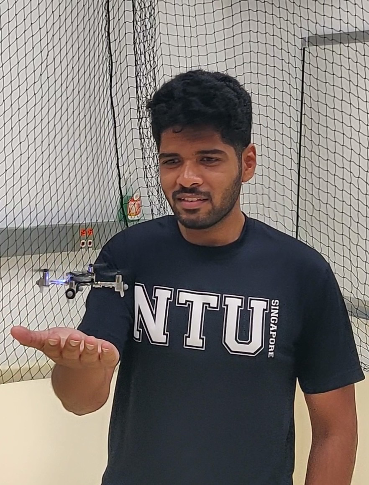

|
 |
Khalid M Jaffar
PhD Candidate
|
Welcome to my personal website! Here, you can find information about my research, projects, and teaching experience. I am passionate about robotics and aerospace engineering, and I enjoy sharing my knowledge with others. Feel free to explore the sections below to learn more about my work and interests.
[About Me] [Research] [Engineering] [Teaching] [Fun Stuff]
Research
My research aims at developing intelligent motion-control strategies that push the operating regimes of mobile robots, while guaranteeing system stability, safety, and robustness. My research interests lie in the intersection of motion planning and control theory, with applications in aerial robotics and autonomous systems. I am particularly interested in developing algorithms that enable robots to operate in complex, dynamic, and uncertain environments, while ensuring safety and reliability.
My research objective is motivated by my background in aerospace and robotics. Aerospace regulations emphasize on safety and reliability, whereas in robotics the primary goal is full autonomy, perhaps at the cost of repeatability or robustness. My research goal is to combine the philosophies of the two fields that I'm passionate about --- aerospace and robotics --- to investigate robot autonomy with guaranteed safety and reliability.
A full list of my publications can be found on my Google Scholar profile. Representative papers are highlighted.
* denotes equal contributions.
Journal and Conference Publications
Workshop Papers and Posters
Applied Projects
I've been part of many engineering projects over the years. Gained a bunch of hands-on experience. Like to get my hands dirty. I've been part of the rocket club at UMD, and a bunch of technical clubs at CFI, IIT Madras -- Aero, Elec, and Robotics. Inter-hostel competitions are a big part of the culture at IIT Madras, and I was part of the Techsoc team during my freshman and sophomore years. The projects which got documented and stood the test of time (and weblinks XD) are listed below.
Technical Reports and Documentation
Teaching
Apart from my academic/professional pursuits, I greatly enjoy teaching and mentoring because it's a combination of some of my favorite things: talking about robotics and aerospace, introducing people to engineering, and constantly unlearning-learning myself. I learned a lot about teaching while at IIT Madras, especially from my amazing professor-mentors. My teaching philosophy centers around fostering a collaborative and engaging learning environment. I believe in the importance of hands-on experience and encourage students to participate actively in their learning process. I welcome feedback from students to continuously improve the course structure and content. Please feel free to reach out with suggestions or concerns.
Experience
I have been involved in teaching and mentoring students in various capacities, including as a lecturer, teaching assistant, and mentor. My teaching philosophy emphasizes hands-on learning and real-world applications of theoretical concepts. I am currently a lecturer at the University of Maryland, College Park, where I teach the CAD Lab course. Previously, I served as a teaching assistant for the Fluid Mechanics/Gas Dynamics Lab and the Flight Controls and Simulation Lab at IIT Madras.
Mentoring experience
I have also been involved in mentoring undergraduate students on various projects, including the SAE AeroDesign competition and the IIT Madras Rocketry team. I enjoy working with students to help them develop their skills and knowledge in aerospace engineering and robotics. I believe that mentorship is a two-way street, and I learn as much from my students as they do from me.
Potential Future Course Offerings
I am open to teaching any of the following courses in the future. If you are interested in collaborating on a course offering, please feel free to reach out.